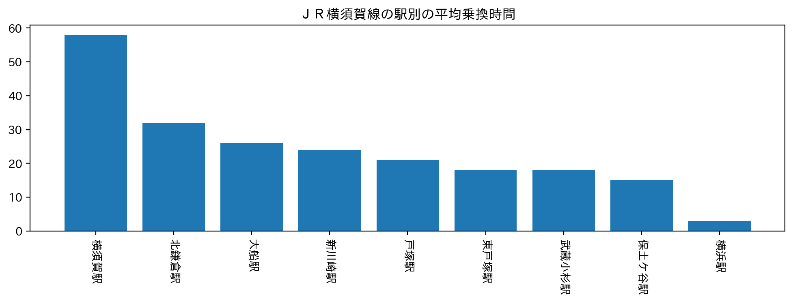
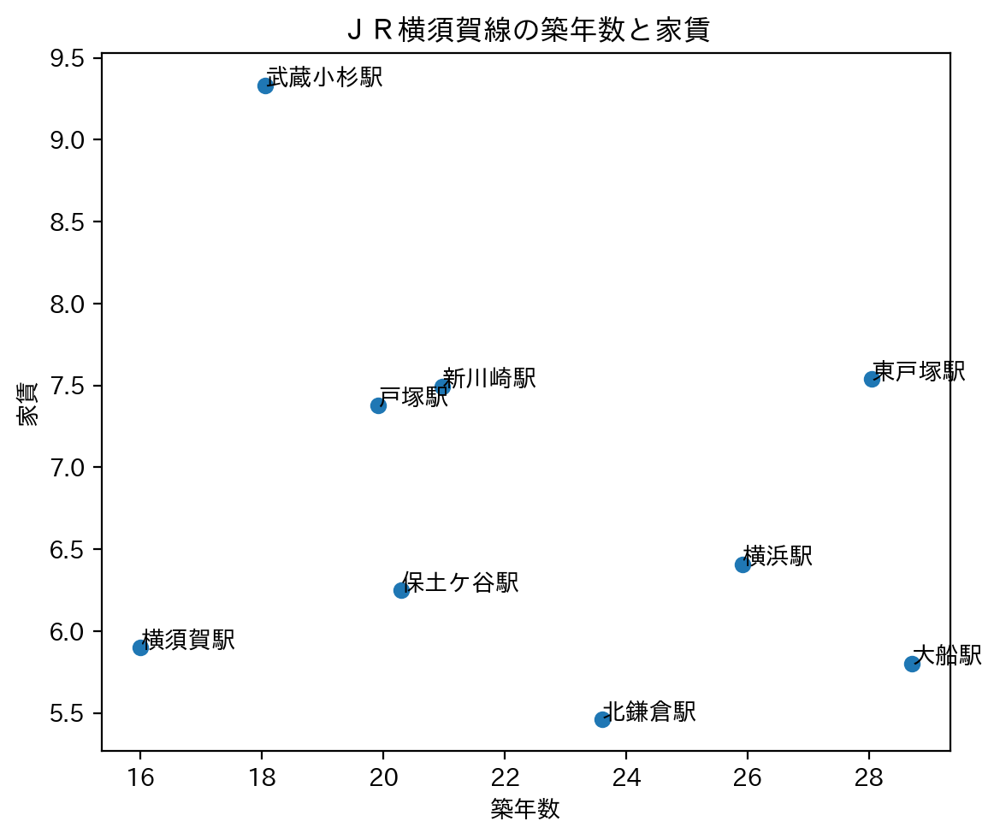
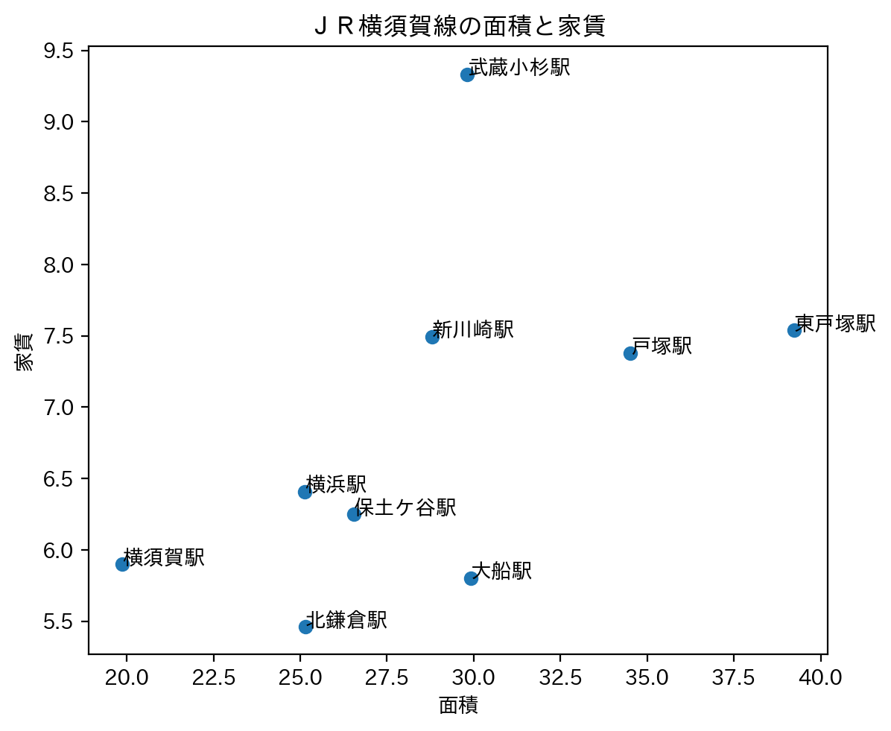
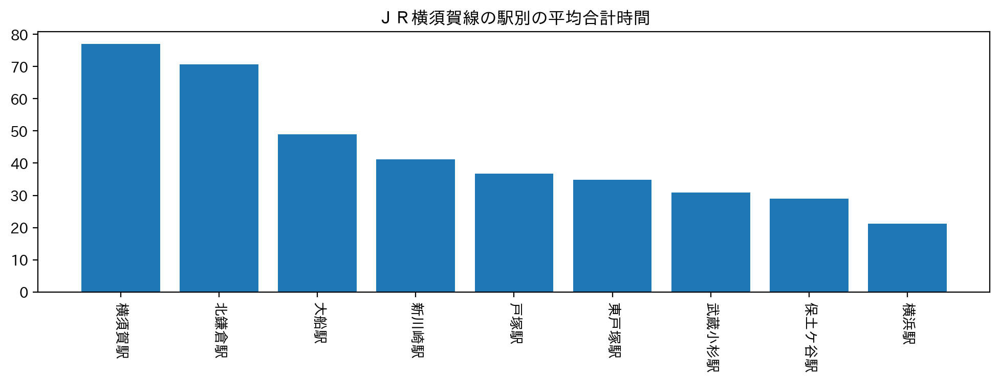

私たちの班は、路線ごとに分担しておすすめの駅を探すことにした。私の担当はJR横須賀線である。
対象とするのは地方から上京してきた大学生で、都会過ぎず地方とのギャップを感じにくい駅を探したいと考えた。
そのため、乗換時間は短い駅よりも少し時間がかかる駅(20~30分程度)を選び、
都会(ここでは横浜駅近辺のことを指す)から離れられるようにした。
平均乗換時間
まずは重要な平均乗換時間を見ていく。

横須賀駅だけ他の駅に比べて乗換時間が60分と長く、大きな違いが見られた。
その他の駅は
戸塚、新川崎、大船、北鎌倉は約20~30分、
保土ヶ谷、武蔵小杉、東戸塚は20分未満、
横浜は10分未満
というグループに分けることができる。
私たちが対象とする駅を考えると、第一候補は約20~30分の4駅、第二候補は20分未満の3駅になる。
ここから別の情報を加えた上で更に候補を絞っていきたい。
築年数と家賃
次に築年数と家賃の散布図からより良い駅を見つけていきたい。

最初にこの図を見たとき、築年数がどれくらいだと古いのかを知らない私は、築年数20年は新しい方だと思っていた。
しかし、調べてみると設備を意識した築年数の基準は10年以内かどうからしい。
参考サイト
つまりJR横須賀線は全体的に築年数が古い!!
(建物が木造なのか、鉄筋コンクリート造なのかにもよって変わってくる)
とは言えリノベーションをしている可能性もあるし、横須賀線担当は代えられないので、
25年を基準に候補を絞ることにする。
築年数だけを見れば、横須賀、武蔵小杉、戸塚、保土ヶ谷、新川崎、北鎌倉が候補になる。
ここから乗換時間で出した候補を抜粋すると、戸塚、新川崎、北鎌倉、武蔵小杉、保土ヶ谷が残る。
更に家賃を考慮すれば、武蔵小杉、新川崎、戸塚は避けたい。
すると残る駅は北鎌倉と保土ヶ谷である。
面積と家賃
次に面積と家賃の関係性を見ていく。

北鎌倉は平均25平米で家賃が一番安く、保土ヶ谷は北鎌倉より家賃は高いが面積が少し広い結果となった。
しかし、家賃はおよそ7000円の差で面積は2平米ほどしか差がないため個人的には北鎌倉の方が良いと感じた。
ちなみに、1人暮らしの専有面積25平米(約15.4畳)は十分快適に暮らせる広さらしい。
参考サイト
平均合計時間
ここで駅別の平均合計時間を見てみると、以下のような結果が出た。

平均乗換時間とは異なり北鎌倉の平均合計時間は70分となっている。
それに比べて保土ヶ谷の平均合計時間は30分と短い結果となった。
あくまで平均であるため北鎌倉の全ての物件がみなとみらいまで70分かかるわけではないが、
平均乗換時間と合わせて考えると、北鎌倉の方が駅まで遠い物件が多いことが予想できる。
JR横須賀線おすすめ駅
以上の結果から、JR横須賀線におけるおすすめ駅は
- 北鎌倉駅
家賃、築年数、面積、平均乗換時間を総合するとやっぱり北鎌倉駅!
最後の平均合計時間は長いという結果が出てしまったものの、
あくまで平均であるため駅に近い物件もゼロではないということでそれ以外の要素を重視した。
- 保土ヶ谷駅
家賃、築年数、面積、平均乗換時間と北鎌倉に継ぐ結果が出ていた保土ヶ谷駅!
平均合計時間から最寄り駅に近い物件の数は北鎌倉よりも多いと予想できるため、
駅近物件をたくさん見て吟味したいという人には保土ヶ谷駅の方がおすすめかも？